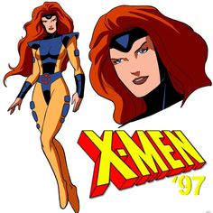

 Jean Grey é uma mutante poderosa e um dos membros fundadores dos X-Men. Ela nasceu com habilidades telepáticas e telecinéticas, o que a torna uma das mutantes mais fortes do universo Marvel. Desde jovem, Jean foi treinada pelo Professor Charles Xavier para controlar seus poderes. Sua história mais famosa envolve sua conexão com a Força Fênix, uma entidade cósmica extremamente poderosa que a escolheu como hospedeira. Sob a influência da Fênix, Jean inicialmente ampliou suas habilidades, mas eventualmente foi corrompida, tornando-se a Fênix Negra, uma versão destrutiva e incontrolável. Nesse estado, Jean causou grande devastação e lutou contra seus amigos nos X-Men. No fim, Jean sacrificou sua própria vida para impedir a Fênix Negra de causar mais destruição. Embora ela tenha morrido várias vezes nos quadrinhos, Jean continua a ser uma figura central no universo dos X-Men, sempre representando o poder e a luta entre o bem e o mal dentro de si.